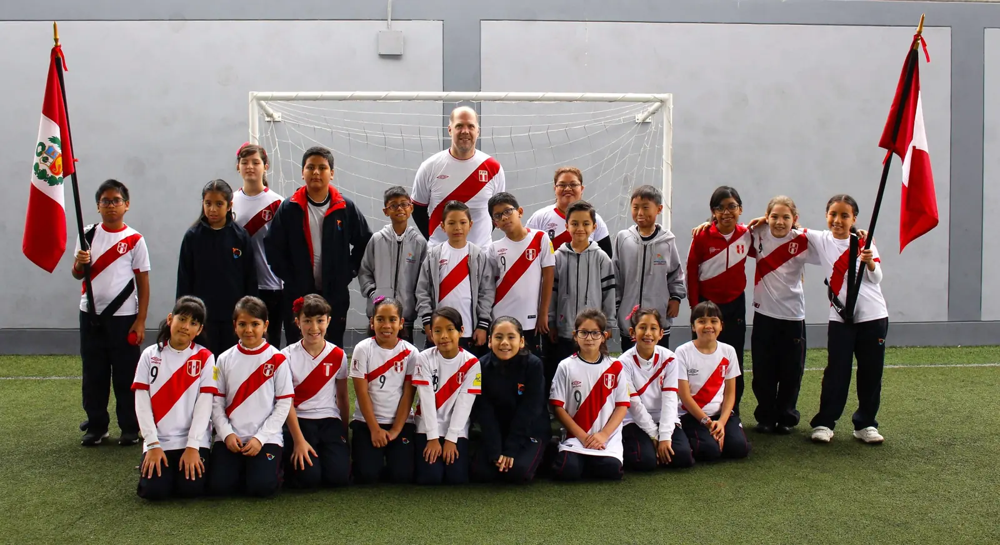
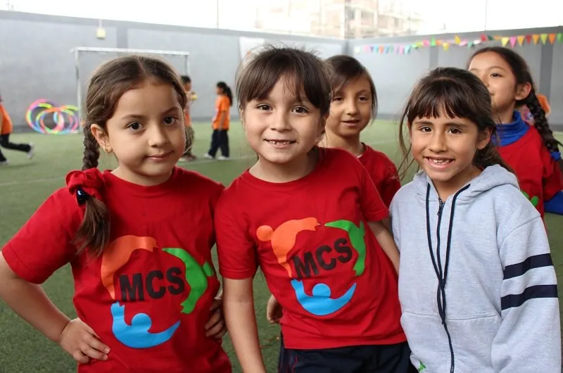
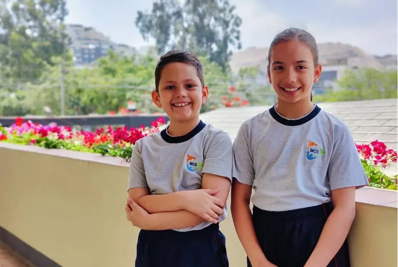
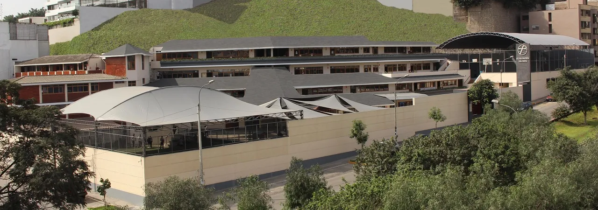

Elementary
1.er grado – 6.º grado

English Immersion Program
Seguimos con el Programa de Inmersión en el idioma Inglés (EIP) durante kindergarten hasta sexto grado de primaria.
Nuestro programa de inmersión en el idioma inglés (EIP) se inicia en el nivel inicial, este programa cuenta con la participación de maestras nativas en dicho idioma, en un ambiente preparado para que el estudiante desarrolle su lenguaje utilizando diferentes métodos y herramientas de aprendizaje.

Enseñanza personalizada
La enseñanza personalizada nos permite conocer y atender las necesidades de nuestros estudiantes, desde el área cognitiva, emocional, así como también espiritual; entendiendo que cada uno tiene su propia forma y ritmo de aprendizaje.
Como institución cristiana, nos comprometemos a ofrecer un ambiente donde se fomente no solo el conocimiento académico, sino también los valores cristianos, el amor por el prójimo, el respeto, la integridad y la responsabilidad.
Más sobre MCS
Deportes
Se realizan durante todo el año y dentro del horario regular de clases, garantizando la actividad física en nuestros estudiantes. Contamos con áreas apropiadas para la realización de diferentes disciplinas. Promovemos un estilo de vida saludable.
Tecnología
Contamos con un laboratorio de cómputo y un laboratorio móvil, el cual se traslada a las aulas para servir como una herramienta más para el mejor aprendizaje de contenidos por parte de nuestros estudiantes.
Arte
Buscamos fomentar la creatividad y la sensibilidad artística en los estudiantes. El arte les permite desarrollar su pensamiento crítico, habilidades cognitivas y motoras como la memoria y la coordinación. Ellos disfrutan de clases de artes plásticas, música y teatro.
Vacantes 2026
Según la última actualización del colegio (11 de junio de 2026), estas son las vacantes del año escolar 2026 en Elementary:
- Primer grado: no hay vacante disponible
- Segundo grado: 2
- Tercer grado: 8
- Cuarto grado: no hay vacante disponible
- Quinto grado: no hay vacante disponible
- Sexto grado: 5



